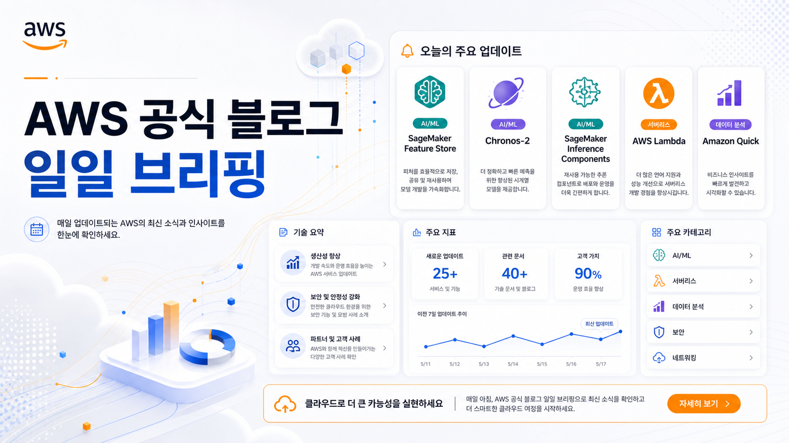
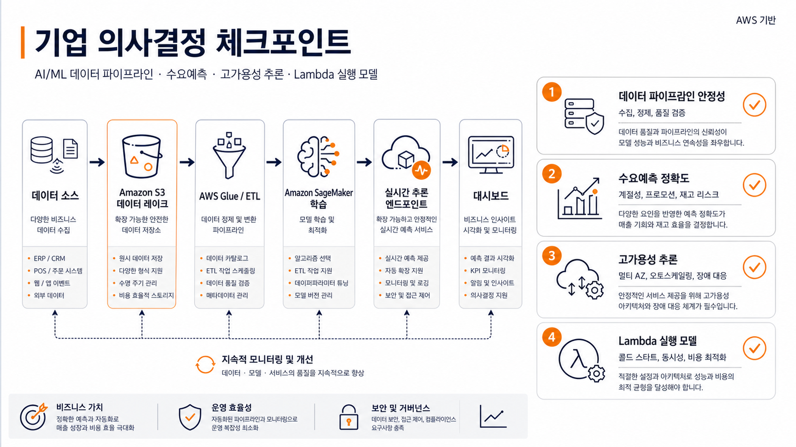
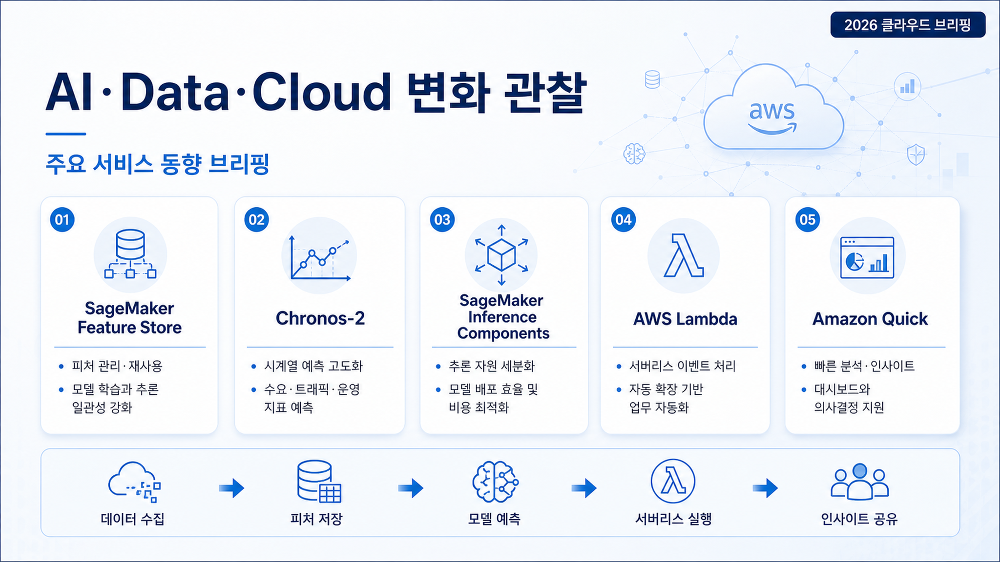

Amazon SageMaker 업데이트와 기업 적용 시사점
공식 AWS Machine Learning Blog에 게시된 AI/ML 관련 업데이트입니다. 원문 기준으로 기술 변화와 기업 적용 시 고려할 의사결정 포인트를 분리해 확인했습니다.
원문 보기공식 출처 기반 · 2026-08-29 07:01:31 KST
이번 실행에서 신규 수집·저장된 공식 블로그 글을 근거로 작성했습니다.
AWS Korea Tech Blog, AWS News Blog, AWS Machine Learning Blog의 RSS를 우선 확인했습니다. 아래 내용은 저장·동기화 검증이 끝난 source-summary를 근거로 작성했으며, 확인이 필요한 부분은 과장하지 않았습니다.
공식 AWS Machine Learning Blog에 게시된 AI/ML 관련 업데이트입니다. 원문 기준으로 기술 변화와 기업 적용 시 고려할 의사결정 포인트를 분리해 확인했습니다.
원문 보기공식 AWS Machine Learning Blog에 게시된 Cloud 관련 업데이트입니다. 원문 기준으로 기술 변화와 기업 적용 시 고려할 의사결정 포인트를 분리해 확인했습니다.
원문 보기공식 AWS Machine Learning Blog에 게시된 AI/ML 관련 업데이트입니다. 원문 기준으로 기술 변화와 기업 적용 시 고려할 의사결정 포인트를 분리해 확인했습니다.
원문 보기Lambda로 서버리스 워크로드를 설계하다 보면 비슷한 고민을 반복해서 만나게 됩니다. 15분 한도를 넘는 장기 워크 플로우는 어떻게 처리할지, 호출 사이에 실행 환경이 멈추는 freeze(일시 정지) 동작이 상시 트래픽 서비스에 맞는지, 사용자나 AI가 생성한 코드를 어디서 안전하게 실행할지 같은 질문입니다. 지금까지는
원문 보기공식 AWS Machine Learning Blog에 게시된 AI/ML 관련 업데이트입니다. 원문 기준으로 기술 변화와 기업 적용 시 고려할 의사결정 포인트를 분리해 확인했습니다.
원문 보기


이번 근거 묶음에서는 AI/ML, 데이터 처리, 클라우드 서비스 업데이트가 주된 관찰 축입니다. 기업은 새 기능 자체보다 현재 권한 모델, 데이터 경계, 비용 예측, 기존 모니터링 체계와 맞물리는 지점을 먼저 검토해야 합니다.
한국 기업이 적용을 검토할 때는 리전·데이터 거버넌스·내부 보안 심사·감사 로그 확보 가능성을 공식 문서와 함께 재확인해야 합니다. 수집 데이터만으로 특정 산업별 적합성을 단정하기 어려운 항목은 확인 필요로 남깁니다.
IAM, 서비스 역할, 외부 연동 범위를 사전에 문서화해야 합니다.
기능 도입 전 요청량, 저장량, 관찰성 로그 비용을 함께 산정해야 합니다.
관찰된 사실: AI/ML 범주의 공식 AWS 블로그 글이 확인되었습니다.
기업 의사결정 시사점/리스크/기회: 실제 적용 전 지원 리전, 권한·데이터 경계, 비용 산정, 기존 운영 도구와의 통합 가능성을 검토해야 합니다.
관찰된 사실: Cloud 범주의 공식 AWS 블로그 글이 확인되었습니다.
기업 의사결정 시사점/리스크/기회: 실제 적용 전 지원 리전, 권한·데이터 경계, 비용 산정, 기존 운영 도구와의 통합 가능성을 검토해야 합니다.
관찰된 사실: AI/ML 범주의 공식 AWS 블로그 글이 확인되었습니다.
기업 의사결정 시사점/리스크/기회: 실제 적용 전 지원 리전, 권한·데이터 경계, 비용 산정, 기존 운영 도구와의 통합 가능성을 검토해야 합니다.
관찰된 사실: Korea Tech 범주의 공식 AWS 블로그 글이 확인되었습니다.
기업 의사결정 시사점/리스크/기회: 실제 적용 전 지원 리전, 권한·데이터 경계, 비용 산정, 기존 운영 도구와의 통합 가능성을 검토해야 합니다.
관찰된 사실: AI/ML 범주의 공식 AWS 블로그 글이 확인되었습니다.
기업 의사결정 시사점/리스크/기회: 실제 적용 전 지원 리전, 권한·데이터 경계, 비용 산정, 기존 운영 도구와의 통합 가능성을 검토해야 합니다.
이미지 모드: GPT Image 2 생성 이미지(ChatGPT Auth 기반, 프롬프트 최적화 1건은 미지원으로 원문 직접 생성)